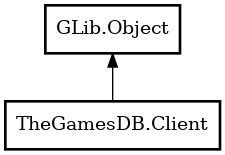

Client
Object Hierarchy:

Description:
public class Client : Object
Client object used to sending requests to the REST API.
Example
var client = new Client ("MY_API_KEY");
var request = new GamesByNameRequest ("Pokemon - FireRed Version") {
fields = GameFieldFlags.RATING,
include = GameIncludeFlags.BOXART
};
client.request_async.begin<Gee.List<Models.Game> (request, (obj, res) => {
var games = client.request_async.end<Gee.List<Models.Game> (res);
foreach (var game in games) {
print ("%s\n", game.game_title);
}
});
Content:
Constants:
Properties:
- public string api_key { get; construct; }
- public string base_url { get; construct; }
Creation methods:
Methods:
Inherited Members:
All known members inherited from class GLib.Object
- @get
- @new
- @ref
- @set
- add_toggle_ref
- add_weak_pointer
- bind_property
- connect
- constructed
- disconnect
- dispose
- dup_data
- dup_qdata
- force_floating
- freeze_notify
- get_class
- get_data
- get_property
- get_qdata
- get_type
- getv
- interface_find_property
- interface_install_property
- interface_list_properties
- is_floating
- new_valist
- new_with_properties
- newv
- notify
- notify_property
- ref_count
- ref_sink
- remove_toggle_ref
- remove_weak_pointer
- replace_data
- replace_qdata
- set_data
- set_data_full
- set_property
- set_qdata
- set_qdata_full
- set_valist
- setv
- steal_data
- steal_qdata
- thaw_notify
- unref
- watch_closure
- weak_ref
- weak_unref